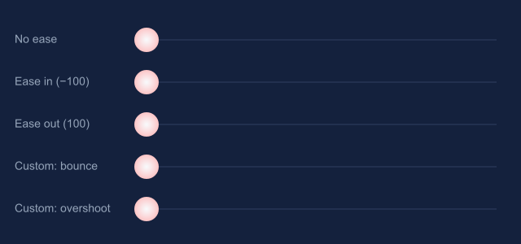
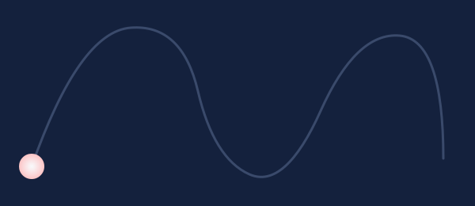
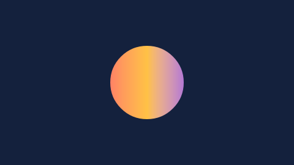
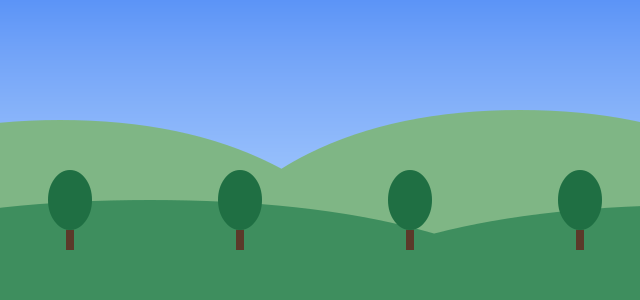

Animation
Flash2SVG reads the timeline the way Flash plays it, and checks every tween against the frames Animate itself draws. When its compact description reproduces every frame, it writes that; when it doesn't (anything unusual), it writes Animate's frames instead.
Tweens and easing
Classic tweens and motion tweens (object-based) export with their real easing. Animate's −100…100 ease is a quadratic curve and comes out exact. Custom ease curves with any number of points — including overshoot, elastic and bounce shapes — and separate curves per property (position, rotation, scale, colour, filters) become exact Bézier pieces, not baked frames.


Smooth tweens (on by default) interpolates between frames at the screen's rate. Turn it off for one step per frame, exactly like the SWF — the "limited animation" look.
Rotations (CW, CCW with a number of turns, Auto) and tweens of colour effects and filters are all covered.
Motion guides
A classic tween on a guided layer follows the curve drawn on its motion guide — any stroke, drawn with the pencil, the pen or as lines bent into curves. Orient to path turns the symbol with the curve. The guide layer itself isn't exported; draw the curve on a normal layer too if it should show.
In SMIL, CSS and Lottie the motion is written along the curve itself (SMIL animateMotion, CSS offset-path, Lottie position keys with curved tangents): the symbol stays on the curve between frames too, at any frame rate, and the file is about half the size of a position per frame. The pace along the curve is Animate's own — checked at every frame, eases included — and so is the turning with Orient to path. Several tweens along one guide, keyframes held on it in between, guides inside symbols and looping movie clips are all covered.
Animate's frames are written instead where that doesn't fit: an instance with a keyframe beside the curve (Animate snaps the transformation point onto the guide; a keyframe placed off it jumps there), a guide that is closed or has several strokes, and Smooth tweens off. The JS player, GIF and WebP use Animate's frames anyway. CSS motion paths need Safari 15.4, Chrome 55 or Firefox 72 or later.


Shape tweens
In SMIL and the JS player a shape tween is one drawing whose paths, colours and gradients blend from the start shape to the end shape, just as Animate's in-betweens do. Flash2SVG matches up the frames Animate writes (contours that start at another point, curves written as lines, holes in another order, edges that shrink to nothing), fits the start and end shape to all of them and checks every frame. Frames that don't fit stay drawings of their own. Gradients that turn during the tween turn in SMIL too.


The morph test document takes 105 KB as SMIL instead of 339 KB frame by frame (16 instead of 36 KB gzipped). --no-morph on the command line draws every frame instead.
Symbols
- Movie clips run on their own timeline from the moment they appear, and keep running across the parent's loop — also after the main timeline stops, as in Flash.
- Graphic symbols follow the parent's timeline with their loop mode: Loop, Play once, Single frame, and the reverse modes, with first and last frame.
- Buttons show their Up, Over and Down states (SMIL and CSS through CSS, the JS player exactly). See Interactivity.
A symbol is written once and reused wherever it appears; only its transform and colour are per instance.

Masks
Mask layers clip their masked layers — also animated masks, masks of several shapes, masks made of symbols and text, and masks inside symbols.

The camera
Animate's camera — pan, zoom and rotation, tweened — exports as a transform of the whole stage. Its colour effects (tint, colour filter) aren't exported (warned).


Frame scripts
Frame scripts aren't run as code, but the playback commands in them are followed — in AS3 and HTML5 Canvas syntax:
| In a frame script | Exported as |
|---|---|
stop(); |
the timeline stops there (movie clips inside keep running) |
play(); |
it plays on |
gotoAndPlay("loop");, gotoAndStop(12); |
a jump (labels and frame numbers; Canvas frames count from 0) |
gotoAndPlay("loop") on the last frame |
an intro that plays once, then the loop |
if (n < 3) gotoAndPlay(1); else stop(); |
"play three times, then stop" — Animate's snippet works too |
gotoAndPlay(1, "Scene 2"), nextScene() |
with All scenes in a row |
Other conditions always run (warned), and a jump to a label that doesn't exist is left out (Flash stops the script there).

Layers and more
- Layer folders, hidden layers (exported by default, as Flash publishes them), guide layers (left out), guided layers.
- Layer parenting (Animate 2020+): children follow their parent's rig frame by frame.
- Advanced layers with layer effects: a colour effect, filters and a blend mode on a whole layer.
- 9-slice scaling of movie clips: corners keep their size, also in tweens (rotated instances scale normally, as in Flash).
- 3D rotations (rotation X/Y) export as their 2D projection.
- Video components (FLVPlayback, HTML5 Canvas Video) become an HTML
<video>over their place, the file copied next to the SVG.